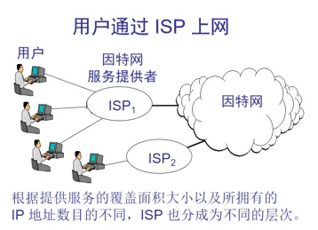
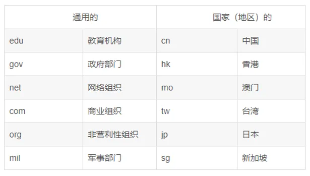
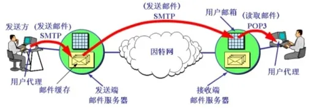

第7章 因特网
Internet 概述
Internet 是将城域网以及大规模广域网连接起来而形成的世界范围的最大计算机网络，又称 全球性信息资源网。
这些网络通过：
- 普通电话线
- 高速率专用线路
- 卫星
- 微波
- 光纤
将不同国家的大学、公司、科研部门、政府组织等的网络连接起来，为世界各地用户提供：
- 信息交流
- 通信
- 资源共享
等服务。

从 Internet 实现技术角度看，它主要由以下几个部分构成：
- 通信线路
- 路由器
- 主机
- 信息资源
通信线路
通信线路用于将 Internet 中的：
- 路由器与路由器
- 路由器与主机
连接起来。
通信线路可分为：
- 有线通信线路
- 无线通信信道
常用传输介质包括：
- 双绞线
- 同轴电缆
- 光纤电缆
- 无线通信信道
- 卫星通信信道
传输速率
传输速率是指线路每秒钟可以传输数据的 比特数。
教材指出：
通信信道的带宽越宽，传输速率越高。
高数据传输速率的网络称为：
宽带网
路由器
路由器的作用，是将 Internet 中的以下网络或设备互连：
- 局域网
- 城域网
- 广域网
- 主机
主机
主机是 信息资源与服务的载体。
主机可分为：
- 服务器
- 客户机
信息资源
Internet 中的信息资源包括多种类型：
- 文本
- 图像
- 语音
- 视频
域名和 IP 地址
当用户在浏览器中输入网址后，浏览器会从网址中取出 域名，然后通过访问 DNS 获得该域名对应的 IP 地址。
DNS
DNS 表示 域名服务器。
教材将其形象地解释为一张记录：
域名 ↔ IP 地址
对应关系的表。
只要给出域名，DNS 就可以查询出对应的 IP 地址。
教材进一步指出：
因特网上的域名由域名系统（DNS）统一管理。
DNS 是一个分布式数据库系统，由以下部分组成：
- 域名空间
- 域名服务器
- 地址转换请求程序
教材指出，在因特网上：
- 域名是唯一的
- IP 地址也是唯一的
域名结构
教材给出的域名格式为：
开头.主机名.主机类别.国家名
其中“国家名”可以省略。
教材示例：
http://www.blackcat1995.com
域名一般有：
3～5 个字段
字段之间使用 . 分隔。
域名的命名采用如下层级方式：
...三级域名.二级域名.顶级域名
顶级域名
教材将顶级域名分为三类。
1. 国家顶级域名
例如：
| 国家或地区 | 域名 |
|---|---|
| 中国 | cn |
| 美国 | us |
| 英国 | uk |
教材配图还列出了：
| 国家或地区 | 域名 |
|---|---|
| 香港 | hk |
| 澳门 | mo |
| 台湾 | tw |
| 日本 | jp |
| 新加坡 | sg |
2. 国际顶级域名
例如：
int
国际组织可在 int 下注册。
3. 通用顶级域名
教材列举：
| 域名 | 用途 |
|---|---|
| edu | 教育机构 |
| gov | 政府部门 |
| net | 网络组织 |
| com | 商业组织 |
| org | 非营利性组织 |
| mil | 军事部门 |

教材指出，域名也是一种知识产权，域名越短越容易记忆和推广。
因特网提供的服务
教材列举了多种 Internet 服务。
万维网（WWW）
WWW 即：
World Wide Web
中文称为 万维网 或全球信息网，是全球规模的信息服务系统。
教材指出，WWW 最早由瑞士日内瓦欧洲粒子实验室开发。
示例：
www.baidu.com
电子邮件（E-mail）
电子邮件地址格式为：
收件人邮箱名@邮箱所在主机的域名
教材示例：
2677345028@qq.com
文件传输协议（FTP）
FTP 即：
File Transfer Protocol
用于在计算机之间传输文件，例如：
- 下载软件
- 传输其他类型的文件
教材指出，几乎所有类型的文件都可以通过 FTP 传输。
远程登录（Telnet）
Telnet 是远程登录服务使用的一种协议。
它定义了远程登录用户与服务器进行交互的方式。
WWW 与 HTML
WWW 中的网页文件使用 HTML 编写。
HTML 即：
超文本标记语言
网页在 HTTP（超文本传输协议）的支持下运行。
教材指出，超文本中不仅包含文本信息，还可以包含：
- 声音
- 图像
- 图形
- 视频
等多媒体信息，因此又称 超媒体。
更重要的是，超文本中包含指向其他超文本的链接，这种链接称为：
超链
URL
URL，即：
统一资源定位器
简单地说，URL 就是因特网上的资源地址。
每个 Web 页面，包括主页，都有唯一的地址。
教材给出的格式：
协议名 // IP地址或域名
示例：
http://www.blackcat1995.com
电子邮件
电子邮件就是平时使用的邮箱。
教材指出，与微信、QQ 等即时通讯工具不同，邮箱可以选择在空闲时间查看邮件，再决定是否回复。
SMTP
邮件传输使用 SMTP。
教材写作：
Simple Message Transfer Protocol，简单邮件传输协议
为了保证信息的可靠性，邮件传输使用 TCP 建立连接。
教材最初描述的方式要求：
- 收发双方全部开机
- 收发双方全部联网
才可以成功传输。
随后邮件系统发展为：
发送方
↓
发送端邮件服务器
↓
接收端邮件服务器
↓
接收方
这样接收方不必始终开机或联网。

POP3
接收方可以通过 POP3 协议读取邮件。
POP3：
Post Office Protocol-Version 3
教材指出，POP3 的优点是：
- 接收方不需要随时开机
- 不需要随时联网
- 条件允许时可以随时从接收端邮件服务器获取邮件
但 POP3 的功能较简单。
例如：
不能指定只下载一封邮件中的某个附件，而需要将邮件全部下载。
MIME
SMTP 只可以处理文本格式文件，即教材所说的：
7 位长度 ASCII 码格式文件
随着网络技术的发展，人们需要通过邮件传送：
- 音频
- 视频
- 其他文件类型
因此出现了 MIME。
MIME：
Multipurpose Internet Mail Extensions
即电子邮件扩展协议。
教材指出：
- SMTP 仍然继续使用
- 非 ASCII 格式文件发送前，通过 MIME 转换成 ASCII 格式
IMAP
IMAP 即：
Internet Mail Access Protocol
即邮件访问协议。
与 POP3 相比，教材指出 IMAP 功能更丰富，可以：
- 指定下载附件
- 对“已读 / 未读”邮件分类管理
- 在不同计算机上打开邮箱时保持同步
随堂检测
1. 下列协议中与电子邮件无关的是（ ）。
- A. POP3
- B. SMTP
- C. WTO
- D. IMAP
查看答案
答案：C
2. FTP 可以用于（ ）。
- A. 远程传输文件
- B. 发送电子邮件
- C. 浏览网页
- D. 网上聊天
查看答案
答案：A
3. 以下哪一种是属于电子邮件收发的协议（ ）。
- A. SMTP
- B. UDP
- C. P2P
- D. FTP
查看答案
答案：A
4. 关于 HTML，下面哪种说法是正确的（ ）。
- A. HTML 实现了文本、图形、声音乃至视频信息的统一编码
- B. HTML 全称为超文本标记语言
- C. 网上广泛使用的 Flash 动画都是由 HTML 编写的
- D. HTML 也是一种高级程序设计语言
查看答案
答案：B
5. IT 的含义是（ ）。
- A. 通信技术
- B. 信息技术
- C. 网络技术
- D. 信息学
查看答案
答案：B